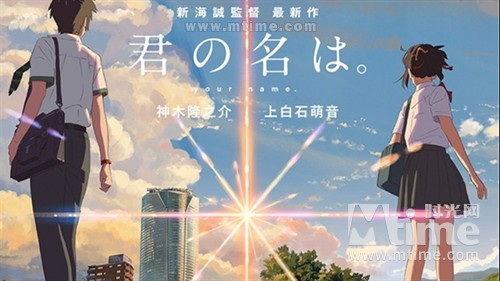

在众多被天朝网友戏称为宫崎骏接班人的日本动画人中，只有庵野秀明和新海诚这俩偏门儿给笔者留下了深刻印象，这哥俩的风格和作品的性格太特立独行。 正巧今年哥俩的作品包揽日本冠亚军，而日本票房三甲引进了俩，剩下那一个能否引进就得看公关团队的能力和小日本老不老实了。
庵野秀明就不说了，笔者对他可真爱不释手，他的代表作品都相当喜欢，对于由他出面压阵真·哥斯拉绝对双手双脚赞同，笔者也算是日特摄哥斯拉的死忠了。
新海诚嘛，其实笔者一开始是拒绝的，甚至很长一段时间都有抵触情绪在里面。这位导演被天朝网友特别是豆瓣用户封为文艺动画之神，作品均乃神作降世， 膜拜他就如同膜拜王家卫、膜拜诺兰一样，是提升自己文艺逼格与审美鉴赏力的不二法门。而笔者却是这世界上最庸俗的烂俗商业电影死忠，故一直未敢窥探神之光芒。 直到今年无意中看到本片预告，仿如见到上帝神迹，瞎子也能重见光明，笔者才诚惶诚恐的翻出新海诚过往作品顶礼膜拜一番。
什么呀，原来被网民封神的大师，讲的却尽是笔者这样屌丝故事，随时随地自说自话无病呻吟，除了伤感过往伤痛，吊死一棵树上，竟不知迎接新生活。 怪不得要把这类吊死自己的人称作屌丝。
看新海诚电影是一种折磨。对于大量通过实景拍摄再动画渲染而成的画面爱不释手，果然是随便截一帧都远胜其他壁纸，无怪乎把他尊称为日本的郭敬明， 他创造壁纸的本事能与天朝PPT究极天王相媲美。另一方面，却不得不忍受糟糕的讲故事水平，老爱架设一个宏大复杂的科幻背景却只是为了衬托一件寻常中学生 青少年的懵懂爱情，把话说的玄之又玄，将看的人搅得云里雾里。说了一大堆空话套话，以为会有多玄妙，结果最后还是来一顿无病呻吟顾影自怜。
反而是某些短片，没有特别科幻的设定，只是生活中的一些小事，虽然最后仍未能免俗的呻吟，却没那么多时间给新海诚浪费在绕弯子上，基本都是单刀直入。 新海诚众多作品，笔者最喜欢的就是时间不长的言叶之庭。感染力与代入感较强，特别能激起人的同理心，没有故弄玄虚，全部笔力皆在男学生与女老师的接触以及 二人的转变上。比起纯粹的中二爱情，这种带着个人成长，最后虽然彼此分开生活却燃起希望的感情经历才最让人动容，总比只剩下屌丝顾影自怜悔不当初生活一片 阴暗要好得多。
今年这部你的名字。就像是新海诚被盗号之后拍出来的作品，有很多地方都不太像过往的他，也许真的有所进步，又或许只是为了商业追求而不得不做出妥协。 至少结果是好的，在日本一路高歌猛进票房年冠，在天朝被众多文艺网友封为新的神作。而在观感上，本片也是整体有趣、愉悦并有所感动，而非像其他一些作 品会有种被刺痛的感觉。
看片之前看了一些网文在讲述影片中的故事与爱情，或者在厘清电影的线索，搞得笔者一头雾水，还以为本片像以前一样特别故弄玄虚不讲人话。但实际看下 来，却发现本片也许是新海诚叙事最平易近人的一部作品。即使有关于产灵、时间、多重宇宙和彗星掠过等科幻和神话传说的设定，也完全没有去干扰影片的叙事， 它们是线索在关键时刻改变故事走向。看了这么多时间线穿越，超级英雄漫画，看了哈利波特与阿兹卡班的囚徒，源代码，看了闪点悖论，奥创纪元，看了大话西游， 星际穿越，要是还会被身体互换和不同时间位面交会搞糊涂，那可真白费那么多时间了。
片中发生了两次彗星坠落，第一次坠落是正常的时间线。在此之前三叶和泷身体互换并逐渐了解彼此、爱上对方，知道对方的存在和名字。坠落前一天， 三叶偷偷跑到了东京去找泷，此时的泷还是三年前的他并不知道三叶的存在，却在电车上意外相遇得到了象征着时间联系的结绳，并一带就是三年，这根结绳又 仿佛中国文化中的红线为二人牵起来姻缘。但此时三叶并不知道自己遇见的其实是三年前的泷，看见对方不认识自己，她才会有一种失恋的感觉。这段 身体互换的戏码虽不新鲜却依旧有趣，夹杂着身份的改变，对异性身体的好奇，不同生活体验，毕竟每个人也许都曾幻想过而片中的他们全都是中二病最 严重的中学生啊，就和当年的自己一毛一样。这一段或许是全片最让笔者有同感的地方。
第一次彗星坠落之后影片无论是基调还是节奏都开始剧变，身体互换的快节奏叙事与交替剪辑被终结，青春洋溢的快乐氛围被打破了。新海诚最喜欢的 屌丝无病呻吟和哀叹自怜有死灰复燃的势头，还好本片把这些全都适可而止。从泷拨打三叶电话不在服务区，跑到乡间寻找三叶未果，意外获知彗星的真相 ，我们了解到，三叶是活于三年前的彗星灾难遇难者。有一个时间同步信号就是二人拨打对方电话都出现了不在服务区的回复，这就证明二人不在同一时空下。 也许正是三叶时间线的终结，后面才会忘记彼此的名字，只是心中有一种我认识那个人的感觉，仿佛在记忆的深处，却就是想不起他是谁。这就是青春的朦胧与美好。 灾难的设定似乎暗指了日本的福岛地震，符合日本影视作品中最常见的灾难情结，源于刻入民族与文化骨髓的对灾难的恐惧。这大概也是他们把天地万物均奉为神 明的原因之一吧。
之后的情节一下子从科幻变得奇幻起来，就像哈利和赫敏用时间沙漏回到一天前拯救小天狼星，泷也通过口嚼酒重回三叶的身体，靠身体互换留下的记忆， 企图在彗星降临前拯救她和村庄的命运。从泷饮下口嚼酒的一刻起，一条新的时间线在酝酿，又或许早在二人初遇的一刻旧的时间线就开始坍塌。这种玩法， 必然会造成时间悖论或死循环，却不是新海诚所关心的，看电影的人自然也不会太在意影片设定上是否有疏忽和漏洞。影片后半段最印象深刻的一幕不是彗星坠 落引发的大爆炸奇观，而是在黄昏之时，明与暗、天与地的交替所产生的时间夹缝中，二人重逢。黄昏日落之时被赋予特殊的时空意义，有点类似加勒比海盗3往 返世界尽头与现世，是对影片中细节的呼应，体现了编剧的细心。最后的情节开展自不用说，没有了悲伤的结果，却是二人久别重逢的初遇。这个结果碰巧和最近 的神奇动物在哪里被清除记忆的胖麻鸡见到曾经爱过的女巫异曲同工——我不知道你是谁，但你始终在我心上占据一角。
看完全片才发现，影片中的时间线设定其实还蛮正常的，基本每一个对时间线的影响都能在同一条时间线上立即生效。比如在三年前彗星坠落前一天三叶跑 去给了泷一根结绳，与之对应的三年后同一天泷就开始带起了结绳。又如三叶拯救村落后，历史立刻做出回应，修正了整个时间的走向。
当然本片相比过往回避了许多老毛病，却还是暴露了一些缺点，新海诚仍是那个新海诚。影片最重要的三叶与泷的感情发展基本上就被二人身体互换给糊弄 过去，蒙混过关。虽然我们都知道二人会恋上，但直到被奥寺前辈点出来，才反应道这就算爱上了？影片后半段就像是空中楼阁随时都会倒塌，泷对三叶苦苦 追寻的动机就是因为他的挚爱，却在前半段给一笔带过。身体互换只展示了二人做了些啥，体验到了不一样的人生，却完全没讲二人之间发生了什么转变。 就仿佛是新海诚终于学会了为宏大的科幻设定铺设必要的剧情细节，却搞忘了要为情感埋线。影片前半段只为设定的展开布局，却没有为情感的爆发埋线。这就 导致影片情绪上的割裂。只有每当歌曲响起，才释放出信号，告诉大家影片即将进入下一章节。这些歌曲把影片分割成了一个个短故事，长片被拍成了短片集， 分界点恰是这些唱出来的插曲。新海诚还是无法彻底驾驭动画长片啊。
抛开这所有的科幻背景与身体互换，本片讲了个什么故事呢。其实就如同李健的歌曲中唱到的，只是因为在人群中多看了你一眼，再也没能忘掉你容颜， 梦想着偶然能有一天再相见，从此我开始孤单思念。一次电车邂逅，让两个中学生产生了悸动，一路寻找彼此，直到八年后重逢。新海诚一定是王家卫的死 忠影迷，这整部电影都在诠释着：世间所有的相遇，都是久别重逢。片名中的句号有何用意，始于你的名字，也止于你的名字。这又是一个来源于日本文化 的设计，对语言中灵的信仰。
为什么日本的动画作品能够如此吸引人，正因它们总是根植于本土文化，在无形之中充当了文化的传播者，再回过头看看我们自己的作品却只是东施效颦。
（更多精彩内容，尽在史歌吹壳子。关注微博：Mosquito史歌，公众号：shige_show）
（史歌出品，原创文章，未经授权，不得转载。）
文：史歌
2016年12月3日
影评（72）
收藏（2189）
下一篇：《海洋奇缘》当迪宝宝只剩下技术和歌唱>>